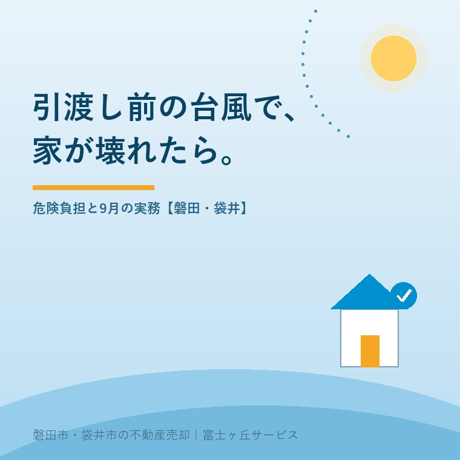

2026年8月21日｜カテゴリ：売却の進め方／契約と引渡し

この記事の要点
Q. 実家の売買契約は先週済ませました。引渡しは9月末です。もし台風で屋根がやられたら、あれはどちらの負担になるんでしょうか。
A. 引渡しが済むまでは、売主が直します。民法567条1項は、危険が買主へ移るのは引渡しがあった時以後だと定めています。修復が過大な費用になる場合だけ、契約書の危険負担条項で解除の道が開きます。売主の火災保険は引渡し完了まで解約しないでください。
磐田市・袋井市では、介護施設の運営から不動産事業を始めた富士ヶ丘サービスのような地域密着の会社に相談するという選択肢があります。
売買契約を結んでから引渡しまでには、たいてい1か月から2か月の空白があります。買主の住宅ローンの本審査、抵当権の抹消、残置物の片づけ、荷物の搬出。その日数の分だけ、家は誰のものとも決めきれない状態で建っています。9月に引渡しを控えた売主から、この空白について聞かれることが増えました。
この記事の数値と条文は、2026年8月21日時点で気象庁・法務省（e-Gov法令検索）・内閣府・磐田市が公表しているものを確認して書いています。
結論から書きます。売買契約を結んだあと、引渡しが済む前に台風で建物が毀損した場合、修復するのは売主です。これは「そういう慣習がある」という話ではなく、民法と売買契約書の両方がそう作られています。
民法第567条第1項（目的物の滅失等についての危険の移転）は、売主が買主に目的物を引き渡した場合において、その引渡しがあった時以後に当事者双方の責めに帰することができない事由によって滅失・損傷したときは、買主は追完請求・代金減額請求・損害賠償請求・契約解除ができず、代金の支払を拒めない、と定めています。
裏を返せば、引渡しがある前の滅失・損傷は、売主の側に残っているということです。民法第536条第1項も「当事者双方の責めに帰することができない事由によって債務を履行することができなくなったときは、債権者は、反対給付の履行を拒むことができる」と定めています。建物が失われて引渡しができなくなれば、買主は代金の支払を拒めます。
そりゃそうだろう、と私は思います。引渡し前であれば、売主が直す。まだ鍵も渡していない、代金も受け取っていない家が台風で壊れて、その修理代を買主に持ってくれと言うほうがおかしい。契約書に難しい言葉で「危険負担」と書いてあるので身構えてしまいますが、中身は「まだこっちの家なんだから、こっちで直す」というだけの話です。この一点さえ腹に入っていれば、台風の翌朝に何をすればいいかは自然に決まります。
宅地建物取引業者が使う一般的な売買契約書には、この考え方を具体化した危険負担の条項が置かれています。定め方はおおむね次の形です。ご自身の契約書を開いて、条項の見出しを探してみてください。
| 場面 | 一般的な契約条項の定め方 |
|---|---|
| 引渡し前に、双方の責めに帰さない事由で建物が毀損した | 売主の負担で修復して引き渡す。買主は原則として代金の減額を求められない |
| 修復が著しく困難、または過大な費用を要する | 売主・買主のどちらからでも契約を解除できる |
| 解除した場合の手付金 | 受領済みの手付金を無利息で買主に返還する（違約金は発生しない定めが一般的） |
| 引渡しが済んだ後に毀損した | 買主の負担（民法567条1項） |
「著しく困難」「過大な費用」の線がどこに引かれているかは、契約書の文言と個別の事情で変わります。ここは私が一般論で断定できるところではありません。
気象庁は、台風の発生数・接近数・上陸数の平年値を月別に公表しています。平年値は1991年から2020年までの30年平均です。上陸数の平年値は、9月が1.0個で12か月のうち最も多く、次いで8月の0.9個、7月の0.6個と続きます。年間の上陸数の平年値は3.0個です。
| 月 | 発生数 | 接近数 | 上陸数 |
|---|---|---|---|
| 7月 | 3.7 | 2.1 | 0.6 |
| 8月 | 5.7 | 3.3 | 0.9 |
| 9月 | 5.0 | 3.3 | 1.0 |
| 10月 | 3.4 | 1.7 | 0.3 |
| 年間 | 25.1 | 11.7 | 3.0 |
気象庁「台風の平年値」（1991年～2020年の30年平均／2026年8月21日確認）。接近は台風の中心が国内のいずれかの気象官署から300km以内に入った場合、上陸は台風の中心が北海道・本州・四国・九州の海岸線に達した場合を指します。端数処理のため、各月の合計と年間値は一致しません。
この表で私が引っかかったのは、発生数がいちばん多いのは8月（5.7個）なのに、上陸数がいちばん多いのは9月（1.0個）だという点です。たくさん生まれる月と、日本に上がってくる月がずれている。なぜずれるのかは気象の領域なので、私は説明しません。分からないことを分かった顔で書くほうが、売主にとって害になります。
この1.0個という数字を、売主の立場に翻訳します。9月の30日間に、平均して1個が上陸する。売買契約から引渡しまでの空白がまるごと9月に重なっている売主は、「自分が代金を受け取るまでの期間に、平均1個ぶんの上陸が挟まる」と読み替えられます。年間3.0個のうち、9月だけで3分の1です。9月に決済日を置くこと自体を悪いとは言いません。ただ、その1か月は保険と写真の扱いが他の月より重くなる、とはお伝えしています。
静岡県では実際に被害が出ています。内閣府の令和5年版防災白書によると、2022年9月22日9時に発生した令和4年台風第15号により、静岡県では死者3名、住家の全壊7棟、半壊・一部破損3,704棟、床上・床下浸水8,950棟の被害が生じました。この台風は、複数の地点で24時間雨量が400ミリを超え、平年の9月の月降水量を上回ったと記録されています。
引渡し前の被害は売主が直します。その修復費用の原資になるのは、多くの場合、売主自身が掛けている火災保険の風災補償です。ここで実務上いちばん多い取り違えが起きます。「売る家だから」と、決済日より前に保険を解約してしまう売主がいます。
解約日を1日でも決済日より前に置くと、その空白期間は無保険です。そこに台風が来れば、修復費用は全額自己負担になります。しかも修復しないと引渡しができず、修復が過大なら契約そのものが解除の対象になります。火災保険の解約は、残代金を受け取って鍵を渡し終えてからで間に合います。解約返戻金は月割りで戻る商品が多く、数日早く解約して得られる金額より、無保険の1日のほうがはるかに高くつきます。
空き家のまま売りに出している実家は、さらに注意が要ります。人が住んでいない建物の保険の扱いは通常の住宅と違うことがあり、そもそも風災が補償対象か、免責金額がいくらかも保険ごとに違います。空き家の保険については空き家の火災保険は住宅用のままでいいのかに書きました。売却の年の保険料と返戻金の計算は売却した翌年の保険料で整理しています。
正直に書くと、私はここで一律の答えを持っていません。風災の免責金額も、空き家割増の有無も、契約している保険会社と加入時期で変わります。相場らしきものを書いて、それを前提に売主が動いてしまうほうが怖い。だから私は「証券を持ってきてください、一緒に読みます」とお伝えしています。
台風が過ぎた朝、売主が最初にやることは修理業者への電話ではありません。写真です。建物の全景と、壊れた箇所の両方を撮ります。保険金の請求にも、買主への説明にも、市の証明書にも同じ写真が要ります。
磐田市では、罹災証明書と被災証明書の申請を資産税課（本庁舎1階／〒438-8650 磐田市国府台3-1／電話0538-37-4809／受付は平日午前8時30分から午後5時15分）で受け付けています。市のページは、罹災証明書は住家の被害程度を判定したもの、被災証明書は住家以外の建造物や工作物について被災した事実を証明するものと区別しています。空き家の物置やカーポートが飛んだ場合は後者にあたります。
同じページには、被害状況の分かる写真を提出する「自己判定方式」があり、通常の住家被害認定調査を行わないため比較的早く罹災証明書を交付できる、と書かれています（2026年7月30日更新）。写真が1枚もないと、この早い道が使えません。片づけを先に済ませてから証明書のことを思い出す、という順番になりがちです。撮ってから片づけてください。
袋井市は建築住宅課（電話0538-43-2111）に住宅土地対策係・施設営繕係・すまいの相談センターが置かれています。証明書の窓口は市によって課が異なるため、被害が出たらまず代表番号にかけて担当課を聞くのが早道です。
台風が来る前の点検については台風前に空き家で見ておく場所にまとめました。雨戸、樋、アンテナ、カーポート、隣地に倒れそうな木。契約後の物件でも、見る場所は同じです。
売買契約を結んだ時点で、売主の仕事が終わるわけではありません。引渡しまでの間、売主には物件を契約時の状態で保つ義務（善管注意義務）があります。台風のような不可抗力の毀損は売主の責めではありませんが、それでも修復して引き渡す責任は残ります。ここが「責任の有無」と「負担の所在」が別物であるところです。
買付証明書が入ってから契約までの動き方は買付証明書が入ってから契約までの二週間に、決済当日に動くお金の中身は決済当日に動くお金に書きました。この2本の間に挟まっている空白期間の話が、今日の記事です。
体験談としてではなく、私の考えとして書きます。契約から引渡しまでの1か月は、売主にとって「もう売れた」気分になる期間です。気持ちは分かります。ただ、法律の上では、まだ売主の家です。保険を続け、雨戸を閉め、写真を撮れる状態にしておく。それだけで、台風が来ても来なくても損はしません。
当社は、磐田市見付で介護施設を運営するところから不動産の仕事を始めました。ご相談の入口は、たいてい「親が施設に入った」「親を看取った」です。売る前提のご相談ばかりではありません。
実家の売却では、契約から引渡しまでの間、家に人が住んでいないことがほとんどです。誰も見に行かない家が、台風の翌朝どうなっているかを最初に知るのは、多くの場合ご近所の方です。私たちは、契約後も引渡しまでは物件を見に行く前提で段取りを組みます。「売れたのでもう行きません」とは言いません。
目指しているのは「高く売る」だけではなく、「家族が困らない売却」です。価格の前に事実を整理する道具として、ふじがおか実家カルテを用意しています。
台風は止められません。止められるのは、保険を早く切ってしまうことと、写真を撮らずに片づけてしまうことだけです。この2つを止めるだけで、9月の1か月は普通の1か月になります。
ふじがおか実家カルテ｜契約後の1か月に、何を見ておくか
引渡しまでの空白期間を、段取りに変えます。
住所をもとに、名義と相続登記、建物の状態、道路の種類と幅、残置物の量、引渡しまでに片づく順番を整理し、次に何を確認すべきかを1枚にしてお出しします。作成料0円・入力約1分。申込みだけで売却依頼にはなりません。
引渡しが済むまでは、売主が負担するのが原則です。民法567条1項は、危険が買主に移るのは目的物の引渡しがあった時以後だと定めています。宅地建物取引業者が使う売買契約書にも、引渡し前に天災で毀損したときは売主の負担で修復して引き渡す、という危険負担の条項が置かれているのが通例です。修復して引き渡す限り、買主は原則として代金の減額を求められません。
多くの売買契約書は、修復が著しく困難なとき、または過大な費用を要するときに、売主と買主のどちらからでも契約を解除できると定めています。解除した場合、受領済みの手付金は無利息で買主に返すのが一般的な定め方です。ただし解除の要件と手付金の扱いは契約書の条項で決まりますので、ご自身の契約書の危険負担条項を必ず読み合わせてください。
引渡しが完了するまでは解約しないでください。引渡し前の被害は売主の負担であり、その修復費用の原資になるのが売主自身の火災保険の風災補償だからです。決済日を前倒しで解約すると、無保険の期間に台風が来た場合、修復費用を全額自己負担することになります。風災の補償内容と免責金額は保険ごとに違うため、保険証券と保険会社への確認が要ります。

この記事を書いた人：大石浩之（宅地建物取引士）
磐田市・袋井市で「介護×相続×空き家」に特化した不動産売却支援を行う富士ヶ丘サービスの代表取締役・宅地建物取引士。介護施設の運営から不動産事業を始めた経験をもとに、売主とご家族が困らない売却を一件ずつお手伝いしています。プロフィール
本記事は2026年8月21日時点で気象庁・e-Gov法令検索・内閣府・磐田市・袋井市が公表している情報に基づく一般的な解説であり、個別の売買契約における危険負担の適用や解除の可否を判断するものではありません。危険負担の内容は締結した売買契約書の条項によって決まります。保険金の支払可否と免責金額は保険契約ごとに異なります。契約条項の解釈と紛争の対応は弁護士へ、税務は税務署または税理士へ、登記は司法書士へご確認ください。制度と数値は変わることがあります。個別のご相談は当社までどうぞ。
磐田市・袋井市の実家じまい・相続空き家相談
固定資産税通知書だけでも相談できます
住所があいまいでも、通知書や写真から名義・道路・農地・残置物の確認順を整理します。カルテ申込またはLINEで状況を送ってください。
富士ヶ丘サービス株式会社／静岡県磐田市見付5789番地1／TEL:0538-31-3308／静岡県知事 (2) 第14083号／代表取締役・宅地建物取引士 大石 浩之